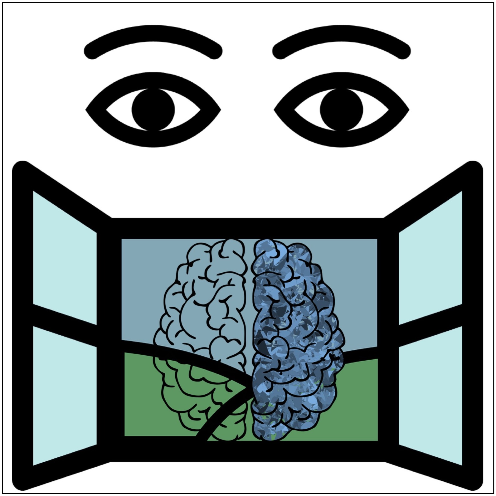
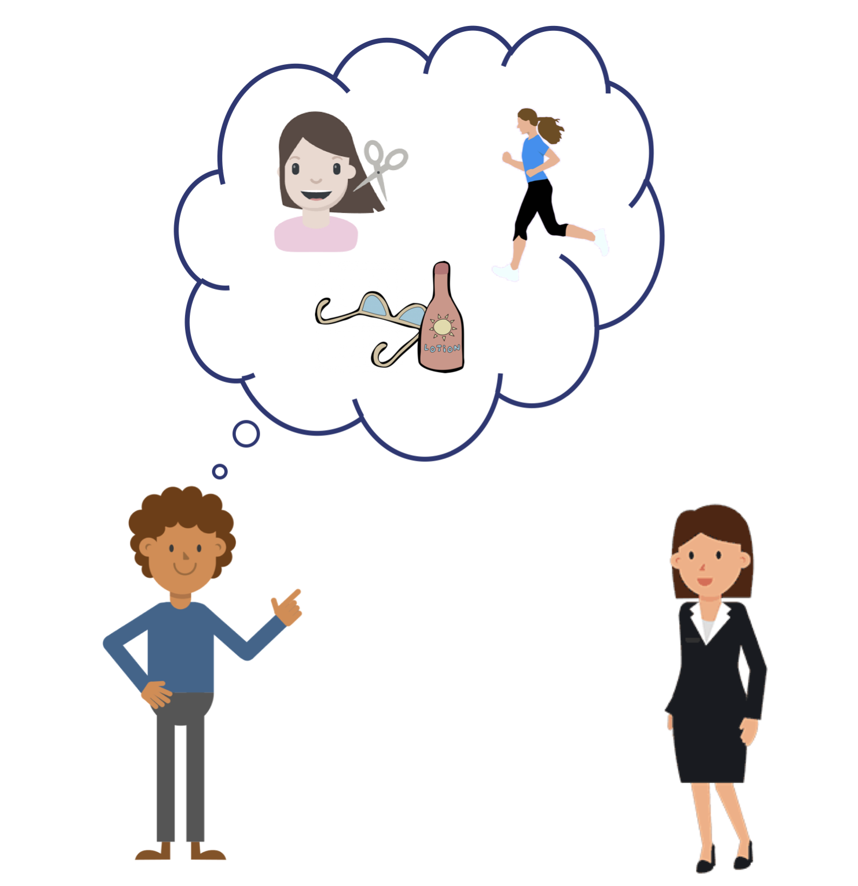
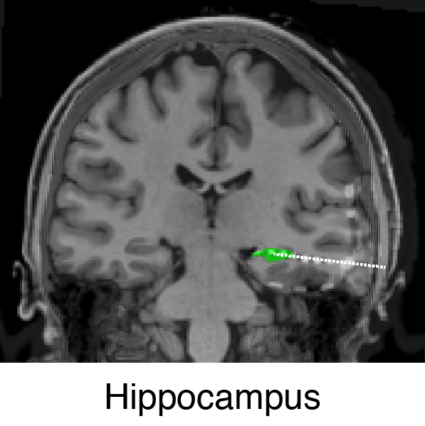
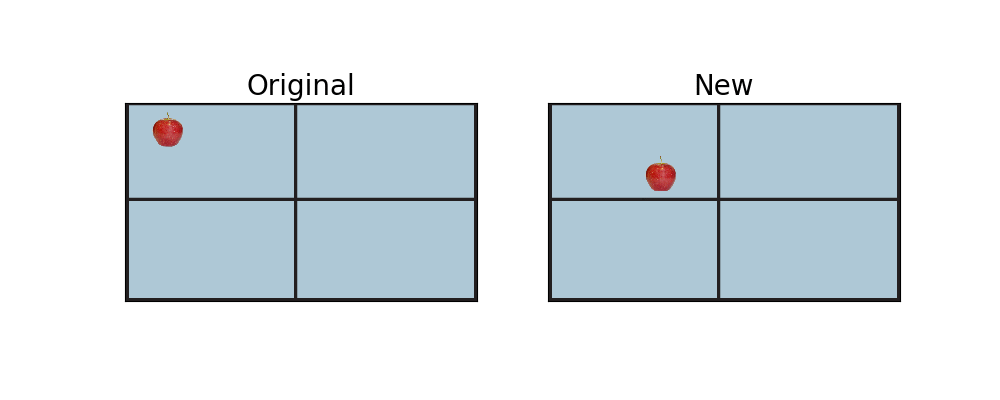
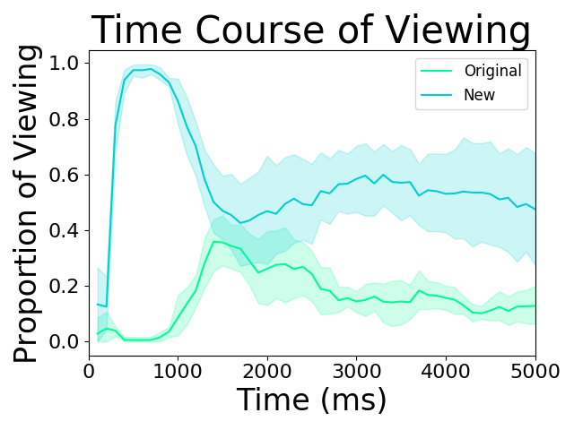
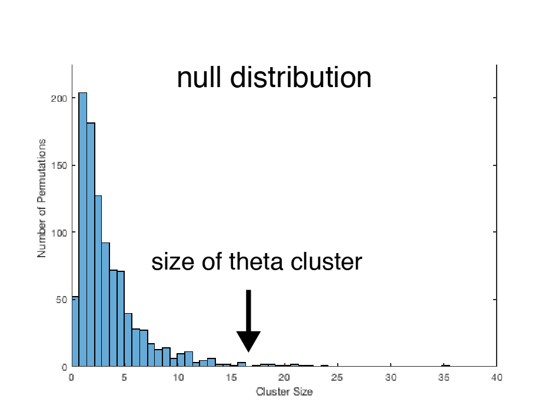
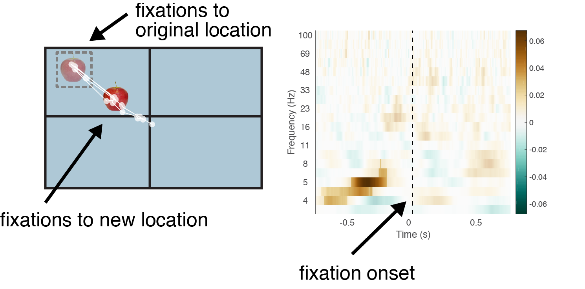

Our eyes know what we're thinking before we do
You might think that our eyes mainly get preoccupied by flashy things in the environment -- like light and motion. And, yes, those are pretty neat to look at (just ask a cat about a laser!). But, our memories also strongly influence what we look at and when. In fact, your eyes can even tell us whether you are going to remember what you're looking at right now.
As the old saying goes: the eyes are the windows to the brain.
Detecting differences
Imagine seeing a friend after a few months. immediately, you can tell that something is different. You ask, have you lost weight? Did you get a tan? Oh, you have a new haircut! Even though it may have taken you a few moments to hone in on her new hairstyle, your eyes were probably drawn back to her hair several times before you realized that it was the thing that was different.

In this scenario, the memory of your old friend guided your eye movement to the changed feature (the haircut), and then your conscious awareness caught up. Lets try to create a play-by-play of what's happening in your mind:
- you see your friend
- you sense something is different
- you remember the last time you saw your friend
- you realize it's her hair
That might not even be enough detail. At some point, you must have compared the memory of your friend to her current appearance in order to detect the difference. These processes happen so rapidly that you might not be aware of all of the steps involved in what seems like such a simple task. It turns out that the order of these processes and the specific brain mechanisms involved in implementing them is at the limit of our current scientific understanding. This is because, until recently, we have lacked the tools to dissect these processes on the timescale that they occur.
I've pioneered an approach that can get us get us the necessary fine-grained resolution to break apart these steps by combining eye movements with direct brain recordings from the memory region of the brain, the hippocampus.
Direct brain recordings
We know that the hippocampus is important for accessing memories, so we wanted to record its activity as these events unfold. However, several problems arise with the available tools when we try to monitor hippocampal activity. First, it's deep in your head, so we can't use scalp EEG, which mainly provides information about brain activity close to the scalp (see Consciousness Continuum post). Second, we need to capture brain activity really quickly, so we can't use fMRI, which is way too slow. The only technique that can get data in real-time directly from the hippocampus is from electrodes implanted directly into the brain. When this technique is done in humans, it is called intracranial EEG.

Although incredibly rare, this procedure does happen at major medical centers in the United States and elsewhere. It occurs during a clinical procedure used on patients with severe cases of epilepsy. These patients have seizures all of the time, and unfortunately, no drugs, diet, or exercise have been able to effectively eliminate them. You can imagine that unpredictable and persistent seizures can be debilitating to living a normal life. Simple activities like driving a car or taking a shower suddenly become very risky. The goal of the procedure is to identify the brain region that is causing the seizures. If the source can be located, then doctors will remove that part of the brain. This approach is highly effective at reducing and often curing epilepsy.
While the patients are in the hospital, doctors monitor their brain activity from the implanted electrodes. Patients are in the hospital for ~1-2 weeks, while doctors wait for them to seize so they can identify the source of the seizures. Because the seizures are unpredictable, there is some waiting time between the busy clinical schedule. During this time, I am able to get access to the patients so they can complete my memory tasks for research.
Eyes are the window into the brain
Eye movements are at the cusp of unconscious vs. conscious brain activity, as they can reveal real-time information about what we are thinking before we even have time to overtly verbalize it or make a voluntary response. Consequently, eye movements provide the best behavioral metric we have to study fast brain activity, due to their rapid occurence and tight correlation with thought processes.
I took advantage of this precise timing feature by linking eye movements to brain activity from electrodes implanted deep into the brain of epilepsy patients. This approach allowed me to track memory processing as it unfolded rapidly over time.
Memory task
Subjects studied individual objects in unique locations on a computer screen (see the apple on the left). After a delay, subjects saw the same object again, but this time, the object would sometimes appear in a new location. When this happened, subjects would detect the difference and look to the place where the object used to be on the screen (on the right, see the eye movements move from the apple's new spot to its old spot).

The sequence of eye movements tended to occur in a specific order. Subjects would first view the object in its new spot. During this time, they were likely identifying the object and remembering it from the earlier study phase. Then, they remembered the object's original location and look to it. After looking around the old spot, they would return back to the object's new location, comparing the object's current location to the location they have stored in memory (see how the eyes move back and forth between the two spots on the right).

When I examined eye movements across all subjects and trials, I saw a similar pattern emerge. I plotted the time course of viewing the object's new location and the object's original location for trials where the subject later remembered the original location on a final test. With this plot, you can see when subjects look at the original location -- this tends to happen in the middle of the trial, ~ 1500-2500 ms after the object appears on the screen.
Looking through the window
We looked at the raw electrical activity recorded from the hippocampus. The raw electrical activity is composed of a mixture of different frequencies, which we can break down with a Fourier transform. When we apply the transform, we get distinct activity in the different frequency bands (from 3 to 100 Hz).

We focused on a low frequency range called theta (3-8 Hz), because it is important for remembering. This frequency range serves as a channel for the hippocampus to communicate to other parts of the brain. The hippocampus contains an index of all of our memories, but it doesn't contain the actual content. It signals to other brain regions that store the actual memory content to queue up the memory, so that we can have the experience of reliving our old memories.
When we looked at theta activity in the hippocampus, we found that the theta waves aligned just before subjects looked to the apple's old location. You can see the peaks and troughs roughly lining up just before the patient moved her eye to the apple's old spot (highlighted in blue). That means that theta is linked to the experience of remembering where the object used to be. And, it means that the eye movement provided a good metric for knowing when the subject remembered the object's old location.

Quantifying effects of brain activity
Although that one trial looks fairly convincing that theta waves are aligned to eye movements when we are remembering something, it's not statistically sound. We have to look at activity across many trials and many patients and see if the effect holds up. Furthermore, we have to look across a whole range of frequencies to make sure that theta is really something special.
To do this, we combined our data across 5 patients. Each patient had ~7 hippocampal electrodes and a few hundred distinct eye movement events. We decomposed the raw electrical activity into separate frequency bands from 3 to 100 Hz. Then we looked for significant effects. For this analysis, we compared brain activity across two different types of eye movements -- when subjects looked to the object's original spot vs. when subjects looked to the object's new spot.
This comparison yielded a series of difference values at each time-frequency point. We identified the individual time-frequency points that have large difference values. We then looked for high scoring points that were contiguous on either the time or frequency scale. These contiguous points are called clusters. We summed up the value of each unique cluster and assigned a value to it.
To distinguish significant effects from noise, we created a null distribution from the data. For this, we shuffled the condition labels of each eye movement and then re-ran the comparison. We found the largest cluster from each random comparison and put that into the null distribution. We repeated this process 1000 times. Then, we looked to see where the clusters from the real data fell in the null distribution.

Predicting the future
We found one real cluster of activity that survived significance testing. This cluster fell squarely in the theta range (~5 Hz). This significant cluster indicates that theta waves align just before subjects look to the spot where the apple used to be, meaning that theta waves align when we remember old memories. It turns out theta is important for remembering! These findings show that our eye movements are precisely timed to remembering (this has never been shown before!).

These results provide concrete evidence that our eyes are powerful indicators of our thought processes. As far as I know, I'm the only one who does this type of experimentation. I pioneered the experimental approach and coded the data pipelines for how these disparate information sources (intracranial EEG, eye tracking, and behavioral tests) would get linked together. It required designing specialized behavioral tests that took advantage of peoples eye movements to tease apart what they were doing. Eye movements provide a powerful to to study people's thought processes.